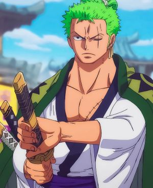
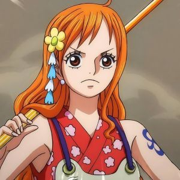
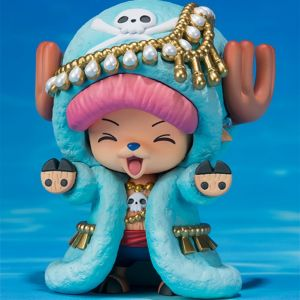
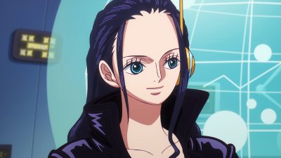
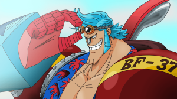
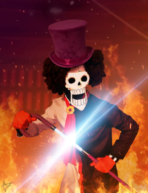

Straw Hat's Crew
This page shows the members of the One Piece crew. Each card gives simple information about the character and their role in the team.
To know more Click Here

Monkey D. Luffy (Captain)
Luffy is the captain of the Straw Hat Pirates. He is brave, cheerful, and dreams of becoming the King of the Pirates.

Roronoa Zoro (Swordsman)
Zoro is the swordsman of the crew. He fights with three swords and wants to become the strongest swordsman in the world.

Nami (Navigator)
Nami is the navigator. She is intelligent, careful, and helps the crew travel safely across dangerous seas.

Usopp (Sniper)
Usopp is the sniper of the crew. He is creative, funny, and dreams of becoming a brave warrior of the sea.

Vinsmoke Sanji (Cook)
Sanji is the cook of the crew. He is known for his powerful kicking style and his dream of finding the All Blue.

Tony Tony Chopper (Doctor)
Chopper is the doctor of the crew. He is a reindeer who gained human abilities after eating a Devil Fruit.

Nico Robin (Archaeologist)
Robin is the archaeologist of the crew. She can read ancient texts and wants to learn the true history of the world.

Franky (Shipwright)
Franky is the shipwright. He is a cyborg who built the Thousand Sunny and helps keep the ship strong and ready.

Brook (Musician)
Brook is the musician of the crew. He is a skeleton who returned to life because of his Devil Fruit power.

Jinbe (Helmsman)
Jinbe is the helmsman of the crew. He is a skilled fighter and helps guide the ship through dangerous waters.